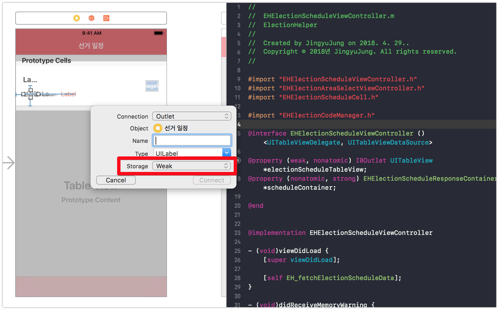
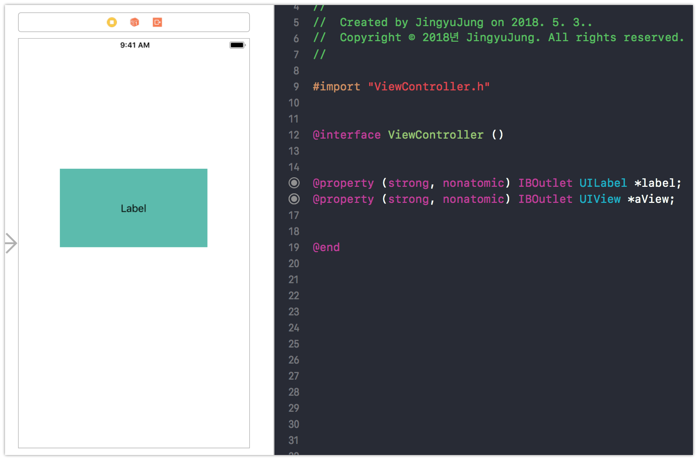

Interface Builder IBOutlet연결에 Strong과 Weak 어떤것을 써야할까?
-읽음
IBOutlet의 Strong vs Weak
Interface Builder를 사용하는 프로젝트에서 View를 코드상에서 제어하기 위해 IBOutlet으로 스토리보드 <-> 코드 를 연결하게 됩니다.Ctrl키를 누르고 View를 .m 또는 .h 파일로 가져오면 다음과 같이 IBOutlet 연결 팝업이 뜹니다.

여기에서 아마도 Property명 또는 Action명을 입력 후 Connect 버튼을 눌러 커넥션을 생성하셨을텐데요.
혹시, 아래쪽의 Storage 영역을 확인해보신적이 있으신가요?
아마도 디폴트 값은 Weak 일겁니다.
여기에서 Strong, Weak 는 ARC(Auto Reference Count)와 관련이 깊습니다.
Strong, Weak에 대한 자세한 내용은 다른 포스트에서 다루도록 하겠습니다.
간단히 소개하자면, Strong은 소유대상의 reference count를 1 증가시킴으로써 dealloc 되지 않도록 하고, Weak 는 reference count는 증가시키지 않고 소유함으로써 상호참조 발생을 막아 메모리 누수를 막기위해 사용합니다.
Dafault는 Weak니까 당연히 Weak을 써야지?
네, 아마 커넥션 팝업에서 디폴트로 Weak가 선택되어 있습니다. 왜 Weak가 디폴트일까요?
Strong 으로 사용할 때 문제가 있는지 먼저 살펴보겠습니다.ViewController, View, Label 이 3가지 요소로 확인해보도록 하겠습니다.
IBOutlet에 Strong을 사용한 경우 시나리오

위 사진과 같이 Strong으로 연결을 한 경우
Reference Count를 계산해봅시다.
- 코드에서 ViewController가
Strong으로 aView를 소유하므로 => aView:1 - Interface Builder에서 aView가
LabelsubView로 소유하므로 => aView:1, Label:1 - 코드에서 ViewController가
Strong으로 Label을 소유하므로 => aView:1, Label:2
그렇다면 여기에서 메모리 누수가 발생할 가능성이 있을까요?
ViewController가 dealloc 된다고 가정해보면
ViewController가 dealloc되는 시나리오로 다시 Reference Count를 계산해봅니다.
- ViewController가 dealloc되므로 소유하고 있던
aView의 reference count를 감소 => aView:0 (aView의 Reference Count가 0이 되어 dealloc 됩니다) Label을 소유하던aView가 dealloc 되므로Label의 reference Count 감소 => aView:dealloc 됨, Label:1- ViewController가 dealloc되므로 소유하고 있던
Labelreference Count 감소 => aView:dealloc 됨, Label:0Label의 Reference Count가 0이 되어 dealloc 됩니다)
모두가 깔끔하게 Dealloc 되는 해피앤딩 입니다.
이렇듯 IBOutlet에 Strong 을 쓴다고 해서 잘못된 일은 아닙니다.
오히려 Strong을 써야하는 경우가 있습니다!!!
IBOutlet에 Strong을 써야 하는 경우
복잡한 뷰 Hierarchy를 가진 경우에는 Weak 대신 Strong을 써야만 하는 경우도 존재합니다.
깊은 뷰 Hierarchy 구조에서 모든 Connection이 Weak라고 한다면 중간쯤 있는 View가 어느 이유에서인지 dealloc이 된다면? 그 하위뷰들도 함께 dealloc이 됩니다.
만약 복잡한 뷰 Hierechy 구조상에서 subview의 subview를 사용해야 하는 경우. 의도치 않은 nil을 경험할 수도 있습니다. 일반적이지는 않지만 충분히 겪을 수 있습니다.
그러면 Strong이 복잡한 Hierarchy에도 문제없고, 메모리 누수도 없으니 무조건 Strong을 쓰면 되나요?
아뇨
Default 값이 Weak인 이유가 또 있겠죠. 좀 더 일반적인 상황에서 Weak가 유리한 상황이 존재합니다.
바로 메모리 부족
메모리가 부족하면 ViewController의 didReceiveMemoryWarning가 호출됩니다.
보통 didReceiveMemoryWarning 에서 main view를 nil 처리함으로써 main view를 포함한 subview들 까지 모두 dealloc 하여 메모리를 확보하는 동작을 구현합니다.
이 경우에 IBOutlet Strong 으로 Subview들을 갖고있다면, ViewController가 Strong으로 갖고있는 Reference Count 1 때문에 절대 최소 1 이하로 내려가질 않습니다.
즉, 그 Subview의 ParentView가 nil이 되더라도 SubView는 dealloc되지 않게 됩니다. 보이지도 않는 뷰가 메모리를 차지하게 되어버리는 것이죠.
결론
디폴트로 Weak을 사용하는게 좋습니다. 그 외 정말 위에서 소개한 특별한 상황 (복잡한 뷰 Hierarchy)를 이해하고 정말 필요할 때 Strong으로 사용하시면 됩니다.